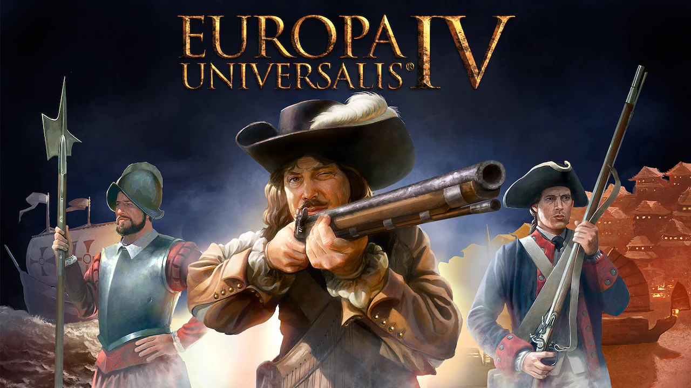
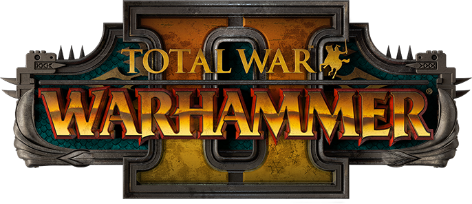
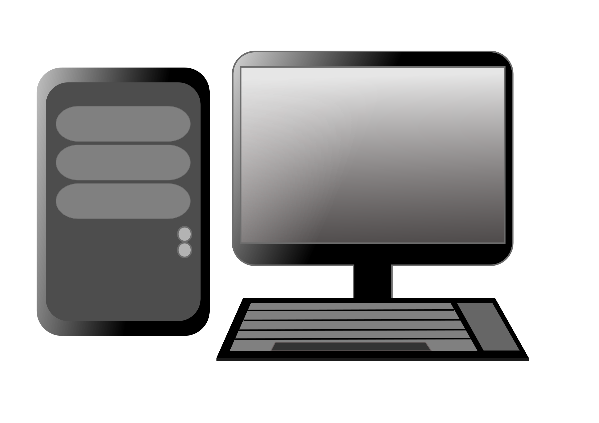

5 GRANDES JUEGOS PARA TU ORDENADOR
Esta lista presenta una opinión personal sobre 3 de los mejores juegos que
hay para la plataforma PC.
Esta opinión se basa en mi experiencia y podremos encontrar gran variedad entre ellos. Pasaremos a
analizarlos uno por uno:
Europa Universalis 4
Total War: Warhammer 2
Cities Skylines
EUROPA UNIVERSALIS 4
En este juego, tendremos como objetivo dirigir una gran nación desde la
época del renacimiento
hasta la Revolución. Es un 4X en el cual tendremos que tener muy en cuenta tanto la diplomacia, el
comercio, las guerras
y la administración de nuestros ingresos para poder progresar y llegar a ser una potencia mundial.
Tendremos disponible
todos los países del mundo, siendo estos fieles hostóricamente, y teniendo la posibilidad de formar
estados modernos.

Sin duda es un gran juego al que se le ha puesto mucho cariño por parte de los desarrolladores y al que
hay que
dedicarle muchas horas para poder conocer todos los aspectos que se nos ofrece. Si te gusta el Risk o
juegos de
administración, has encontrado de mano de Paradox el indicado.
TOTAL WAR: WARHAMMER 2
Si te gusta manejar ejércitos enteros con cientos y miles de unidades
diferentes, si te gusta
las películas del Señor de los Anillos, si te gusta la guerra en su máximo explendor... Asaltos a
murallas, mapa único donde
se desarrolla la campaña, cientos de escenarios de batalla, decenas de facciones y subfacciones
(hombres, elfos, enanos,
vampiros...) dragones escupiendo fuego y un sin fin de cosas que te harán pasar las horas jugando sin
cansarte gracias a
sus múltiples opciones. ¿Cuál es la pega? Necesitas un ordenador que esté a la altura, y si lo tienes,
es una compra
obligatoria.

Juego basado en un mapa por turnos y que al entablar batallas estas se realizan a tiempo real con
posibilidad de
modificar la velocidad del juego o de pausarlo para tomar mejores decisiones, podemos estar hablando de
uno de los mejores
juegos de estrategia con una gran comunidad online que no para de crecer.
CITIES SKYLINES
Sin embargo, si tu fuerte no es la estrategia bélica, tenemos otra gran
opción que no puede pasar
desapercibida: El mejor simulador de ciudades creado hasta la fecha. Este gran juego, nos ofrece una
gran variedad de complejos,
especializaciones del terreno, edificios, métodos de transporte, tipos de vías o de carreteras y un sin
fin de contenido que te
hará replantearte si tu objetivo en la vida debería haber sido planificador urbanístico. Cuenta con todo
tipo de detalles, desde
la depuración de las aguas, la creación de la red eléctrica, cubrir necesidades básicas (hospitales,
comisarías y estaciones de bomberos)
la creación de distritos comerciales, empresariales o residenciales hasta la construcción de
universidades, emplazamientos históricos,
zoos y cualquier cosa que debería de tener una gran ciudad.

Es el mejor valorado por los analistas y no es para menos, de seguro que tu también quedarás
encantado en cuanto lo pruebes
puesto que se hace bastante amigable de aprender los primeros pasos, progresando y aprendiendo en el
camino, pudiendo mejorar
aspectos importantes como el manejo del tráfico. Recomendamos encarecidamente las extensiones de la
comunidad gratuitas que posee
Steam, ya que pueden aportar herramientas o edificios muy útiles que hará de este juego uno de los más
rejugables y disfrutables
del mercado.
